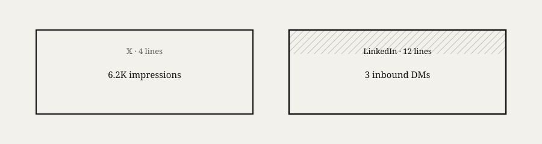

What my Tuesday actually looks like
Building without burning out.
Hey,
People imagine creators live in aesthetic morning routines. Cold plunge. Four-hour deep work. Matcha. Podcast lights.
My Tuesdays look different.

7:15 — alarm, coffee, check phone (bad habit, still human).
8:00 — client work. Bills before brand.
12:30 — walk. Clear my head. Voice-note one idea.
1:00 — lunch. Quick break from screens.
5:30 — gym. Non-negotiable for my mental health. Best thinking happens after.
8:00 — laptop. Create something. Ship something. Close laptop.
Total build time: about forty-five minutes. Not four hours.
I say this because I used to think I needed a new life before I could build a new career. Wrong. I needed a protected slot in the life I already had.
Health matters. Sleep matters. Moving your body matters. Burned-out creators quit. The ones who last fit the work into real days — not fantasy montages.
Nobody sees the client work. The gym. The tired 8pm session. They see the highlight reel and think it was easy.
It wasn't easy. It was fitted in. There's a difference.
You don't need to become a different person. You need forty-five minutes you refuse to negotiate away.
Nobody in my real life knew what I was building for months. Side tabs at lunch. Voice notes on walks. Small reps stacking in private before any public win showed up. Fine. The work still counted.
Gym isn't vanity for me — it's mental health. Best ideas show up on walks. Sleep matters when your job is thinking and creating.
Build the brand. Protect the body. Both matter. Burned-out builders quit.
Forty-five minutes tomorrow. Create. Ship. Done.
I built my whole routine around health first — gym, walk, sleep — then create. When my head was a mess, my work was a mess. Protect both.
Tuesday isn't special. I picked it because it's ordinary. No one fantasizes about a creator's Tuesday. Good. That's the point.
Last Tuesday my 8pm block got cut to twenty minutes. Client call ran long. I almost skipped. Posted one short thing from a voice note I'd recorded at lunch. Three likes. Fine. The rep counted more than the likes.
The weeks that moved my brand weren't montage weeks. They were Tuesdays where I showed up tired.
My non-negotiables aren't aesthetic. Gym because anxiety spikes without it. Walk because screens fry my thinking. Sleep because 11pm posts are worse than no posts.
I used to think burnout was for people weaker than me. Then I hit a wall at month eight — irritable, uncreative, dreading the laptop. Took a week of shorter blocks and more sleep. Came back sharper. Health isn't a reward for success. It's fuel for the next rep.
People DM me asking for my morning routine. I send them this Tuesday instead. Bills before brand. Body before brain. Small block before scroll.
You don't need a podcast setup. You need a slot you defend like a meeting with your future self.
If today is your Tuesday — find forty-five minutes. Not perfect. Available. Ship one thing. Close the laptop. Go live the rest of your life.
The brand grows in the gaps of real life, not instead of it.
I share these stories because Monday's tactics only work if you survive the chapters nobody posts about.
Month two silence. Deleted posts. $0 months. The first invoice that scared me. Boring Tuesdays. Sunday nights with honest eyes. That's the real personal brand journey — not the highlight reel.
Almost three years later I have 5.3K on 𝕏, 16.2K on LinkedIn, 1,100+ subscribers, and clients who found me in public. Same person who almost quit in the void. Different stamina.
Your details will differ. The lesson won't: keep building when it's boring. Protect your health. Ship when it's ugly. Study when it flops. Stay in the arena.
Personal branding online isn't a performance for strangers. It's the accumulated evidence that you kept going when quitting was rational.
I still have doubt days. I still open my work and think it's not good enough. I ship anyway. That's the life lesson behind every tactic I teach on Monday.
Don't quit ten percent before the bend. Your future self is counting on today's rep — even when today's rep feels invisible.
Thank you for reading.
– Andrei
When You're Ready, Here's How I Can Help You:

The 0→1K Daily System
Hit 1,000 followers on 𝕏 in 90 days — daily checklist, copy-paste templates, and engagement scripts in folders you open every morning.
€147 €47
Get Instant Access →